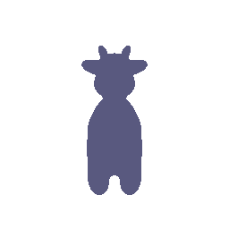
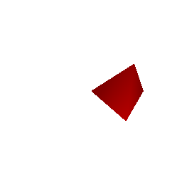
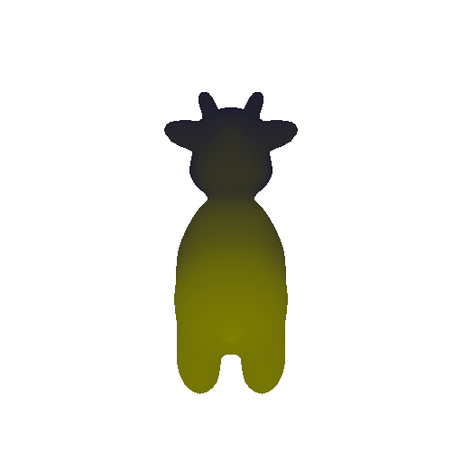

**CMSC848F-3D Vision**
**Project 1**
**Darshit Desai**
Setup
===============================================================================
Rendering your first mesh (5 points)
-------------------------------------------------------------------------------
On your webpage, include an image of your first mesh.

Practicing with Cameras
===============================================================================
360-degree Renders (5 points)
-------------------------------------------------------------------------------
On your webpage, you should include a gif that shows the cow mesh from many continously changing viewpoints.

Re-creating the Dolly Zoom (15 points)
-------------------------------------------------------------------------------
The [Dolly Zoom](https://en.wikipedia.org/wiki/Dolly_zoom) is a famous camera effect,
first used in the Alfred Hitchcock film
[Vertigo](https://www.youtube.com/watch?v=G7YJkBcRWB8).
The core idea is to change the focal length of the camera while moving the camera in a
way such that the subject is the same size in the frame, producing a rather unsettling
effect.
**On your webpage, include a gif with your dolly zoom effect.**
Practicing with Meshes
===============================================================================
Constructing a Tetrahedron (5 points)
-------------------------------------------------------------------------------
In this part, you will practice working with the geometry of 3D meshes.
Construct a [tetrahedron mesh](https://en.wikipedia.org/wiki/Types_of_mesh#Tetrahedron) and then render it from multiple viewpoints.
Your tetrahedron does not need to be a regular
tetrahedron (i.e. not all faces need to be equilateral triangles) as long as it is
obvious from the renderings that the shape is a tetrahedron.
You will need to manually define the vertices and faces of the mesh. Once you have the
vertices and faces, you can define a single-color texture, similarly to the cow in
`render_mesh.py`. Remember that the faces are the vertex indices of the triangle mesh.
It may help to draw a picture of your tetrahedron and label the vertices and assign 3D
coordinates.
**On your webpage, show a 360-degree gif animation of your tetrahedron.
Also, list how many vertices and (triangle) faces your mesh should have.**
**Answer:** The tetrahedron has **4 vertices** and **4 faces**.

Constructing a Cube (5 points)
-------------------------------------------------------------------------------
Construct a cube mesh and then render it from multiple viewpoints. Remember that we are
still working with triangle meshes, so you will need to use two sets of triangle faces
to represent one face of the cube.
**On your webpage, show a 360-degree gif animation of your cube.
Also, list how many vertices and (triangle) faces your mesh should have.**
**Answer:** The cube has **8 vertices** and **12 faces**.
Re-texturing a mesh (15 points)
===============================================================================
Now let's practice re-texturing a mesh. For this task, we will be retexturing the cow
mesh such that the color smoothly changes from the front of the cow to the back of the
cow.
**In your submission, describe your choice of `color1` and `color2`, and include a gif of the
rendered mesh.**
**Answer:** I chose `color1` to be `Navy-blue (0,0,0.5)#000080` and `color2` to be `Yellow (1.0,1.0,0)#FFFF00`. The gif of the rendered mesh is shown below.
